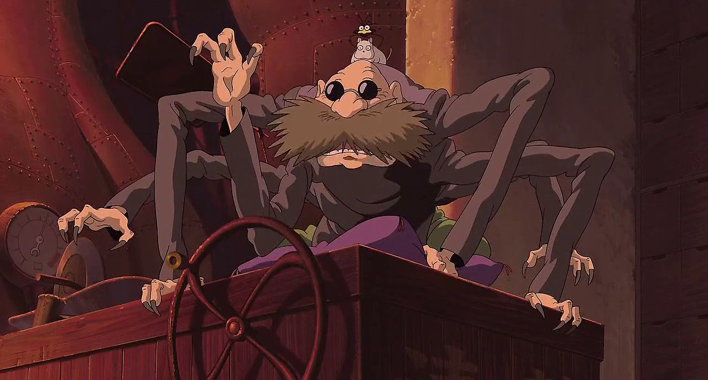

protagonist
Ogino Chihiro (荻野 千尋) / Sen (千)
Một cô bé 10 tuổi, nhân vật chính của anime Sen và Chihiro ở thế giới thần bí. Chihiro là một đứa trẻ thụ động, nhút nhát và hậu đậu. Cô bé hầu như sợ hãi mọi thứ, chẳng dám đối đầu nguy hiểm hay nói lên ý kiến của bản thân. Chính Yubaba đã đổi tên Chihiro thành Sen nhằm mục đích để cô bé quên mất tên thật và không thể trở về thế giới con người. Nhờ có Haku lấy lại bộ quần áo cũ cho cô (thứ mà cô bắt buộc phải có nếu muốn trở về thế giới loài người), cô mới tìm được tấm thiệp chia tay của các bạn trong túi quần và nhớ ra tên thật của mình. Cái tên Sen là chữ đầu tiên của "Chihiro" trong tiếng Nhật, có nghĩa là một nghìn (1000). Khi được nhận vào nhà tắm công cộng của Yubaba với cái tên mới, Chihiro bị mọi người ghét bỏ, kì thị bởi cô là con người. Dần dần, nhờ lòng nhiệt tình, nhân hậu, Chihiro đã hoàn thành nhiều thử thách khó khăn do Yubaba đặt ra để hành hạ cô bé và có được những người bạn tốt như chị Rin, ông Kamajii sáu tay. Người trợ giúp Chihiro nhiều nhất là cậu pháp sư trẻ tuổi Haku.
Haku (ハク)
Pháp sư làm việc cho Yubaba, hình dạng khác của cậu là một con rồng trắng. Cũng như Chihiro, Haku đã bị Yubaba xóa mất tên thật từ lâu, tuy nhiên cậu bé lại nhớ được tên của Chihiro. Haku thường xuyên bị các nhân viên nhà tắm xa lánh vì họ nghĩ cậu bé là tay sai cho Yubaba. Cậu là người đầu tiên Chihiro gặp ở thế giới linh hồn, cũng là người bạn thân thiết nhất của cô bé. Haku luôn mặc bộ đồ trắng vì nghĩa tiếng Hán của cái tên "Haku" nghĩa là màu trắng. Cậu là người rất dũng cảm, chững chạc với khuôn mặt đẹp thanh tú nhưng vẫn phảng phất nét nam tính. Đôi mắt xanh lá cây sắc bén càng khiến cho khuôn mặt Haku ấn tượng hơn. Để che mắt Yubaba, bề ngoài Haku luôn tỏ ra lạnh nhạt với Chihiro. Lúc không có ai theo dõi, cậu lại đối xử rất tốt bụng, ân cần và dịu dàng với cô bé. Thực ra Haku đã biết Chihiro từ khi cô còn rất nhỏ, bởi cậu đã cứu mạng cô khi cô bị ngã xuống sông Kohaku. Haku chính là vị thần cai quản dòng sông nhỏ đó, có tên thật là Nigihayami Kohaku Nushi (ニギハヤミコハクヌシ). Sông Kohaku bị con người lấp đi để xây nhà nên Haku không còn chỗ ở, cậu lang thang đến vùng đất linh hồn và được Yubaba thu nhận làm người học việc. Ở cuối phim, Chihiro đã giúp Haku nhớ lại được tên thật của mình, xóa bỏ lời nguyền của Yubaba ám lên cậu. Khi cô bé tạm biệt cậu để trở về thế giới loài người, Haku hứa rằng họ sẽ gặp lại nhau, cậu cũng nói sẽ không làm người học việc của Yubaba nữa.
supporting character
Oiji Kamajii
Ông lão sáu tay làm công việc đun và pha chế thảo dược nước trong nhà tắm hơi, người ta đặt cho ông biệt danh Nô lệ của những cái nồi đun nước. Thoạt nhìn ông Kamaji có vẻ đáng sợ, xa cách, tuy nhiên tính cách của ông lại không như thế. Thực ra ông Kamaji là người hiền lành, tốt tính, giúp đỡ Chihiro nhiều lần kể từ ngày đầu tiên cô bị lạc vào vùng đất linh hồn. Khi Chihiro mong muốn đến chỗ Zeniba để trả con dấu vàng, Kamaji đã dành cho cô bé những tấm vé tàu mà ông đã để dành suốt 40 năm qua.
Rin (リン Rin)
Cô gái phục vụ nhà tắm, là đàn chị của Chihiro. Rin bình thường khá đanh đá và ăn nói thô lỗ, nhưng cô lại rất yêu quý và chăm sóc Chihiro như một người em ruột. Khi dẫn Chihiro đến xin việc tại phòng của Yubaba, Rin đã che chở cho cô bé khỏi bị lộ trước các quản đốc công của nhà tắm. Khi Vô Diện đi theo Chihiro, cô đã cảnh báo hắn: "Vô Diện, nếu ngươi đụng đến con bé, ngươi sẽ biết tay ta!". Rin có một ước mơ là rời khỏi nhà tắm của Yubaba và sống ở một nơi khác tốt đẹp hơn. Qua hình dáng (so với những nhân viên nữ khác trong nhà tắm) thì rất có khả năng trước đây Rin từng là một con người nhưng vì phải chịu lời nguyền của Yubaba mà cô phải làm việc ở nơi đây.

Vào mỗi dịp hè, Miyazaki Hayao dùng quãng thời gian nghỉ ngơi của mình tại một cabin trên núi cùng gia đình và 5 cháu gái là bạn với gia đình mình. Ý tưởng cho Sen và Chihiro ở thế giới thần bí đến khi ông quyết định sẽ làm một bộ phim cho những người bạn này. Miyazaki trước đó đã đạo diễn cho nhiều phim như Hàng xóm của tôi là Totoro và Dịch vụ giao hàng của phù thủy Kiki, những phim dành cho đối tượng là trẻ em và các bạn tuổi teen, nhưng ông chưa từng làm một bộ phim nào dành cho những cô bé 10 tuổi. Để tìm cảm hứng, ông đọc các tạp chí shōjo manga như Nakayoshi và Ribon mà các cháu gái để lại trong cabin, nhưng ông cảm thấy chúng chỉ đề cập đến chủ đề "phải lòng" và lãng mạn. Khi nhìn vào những người bạn trẻ của mình, Miyazaki nghĩ rằng đây không phải là thứ "giúp sinh ra lòng nhân ái trong những trái tim". Thay vào đó, ông quyết định làm bộ phim nói về một nữ nhân vật chính mà họ, những cháu gái bạn của gia đình ông, có thể noi gương.
collaborators
Phần nhạc nền phim do Hisaishi Joe – cộng tác viên lâu năm của Miyazaki sáng tác và xướng nhạc, đồng thời do dàn nhạc giao hưởng New Japan Philharmonic trình bày. Nhạc nền của Hisaishi đã gặt hái các danh hiệu tại lễ trao giải cuộc thi điện ảnh Mainichi lần thứ 56 cho âm nhạc hay nhất, giải âm nhạc hay nhất ở hạng mục phim điện ảnh chiếu rạp tại hội chợ thương mại anime Tokyo International Anime Fair năm 2001 và hạng mục Album nhạc hoạt hình của năm tại lễ trao giải Đĩa vàng Nhật Bản lần thứ 17. Sau đó, Hisaishi đã bổ sung ca từ cho "Day of the River" và đặt tên cho phiên bản mới này là "The Name of Life" (いのちの名前 "Inochi no Namae") do Hirahara Ayaka trình bày. Ca khúc kết phim có tựa "Always With Me" (いつも何度でも Itsumo Nando demo, Nghĩa đen: Luôn luôn, dù có bao nhiêu lần) do Kimura Youmi – một nhà soạn nhạc và nghệ sĩ chơi đàn lia đến từ Osaka – sáng tác và trình bày. Phần lời được viết bởi một người bạn của Kimura là Wakako Kaku. Ca khúc này vốn dự định được sử dụng trong Rin the Chimney Painter (煙突描きのリン Entotsu-kaki no Rin), một bộ phim khác của Miyazaki nhưng chưa bao giờ được phát hành. Trong một phụ chương đặc biệt trong DVD, Miyazaki Hayao giải thích bài hát này thực tế đã gợi cảm hứng cho ông như thế nào để sáng tạo ra Sen và Chihiro ở thế giới thần bí.Riêng ca khúc đã giành được chứng nhận đĩa vàng tại lễ trao giải đĩa nhạc Nhật Bản lần thứ 43.Bên cạnh album nhạc nền phim, còn có một image album có tựa là Spirited Away Image Album (千と千尋の神隠し イメージアルバム Sen to Chihiro no Kamikakushi Imēji Arubamu) (album mà các bản nhạc phim được trình bày bởi chính các nhật vật các diễn viên lồng tiếng cho nhân vật đó), bao gồm 10 bản nhạc.
What do you see in the eyes of a lovebird/ beholder?
Is it a sincere heart or an unfinished life?
© Copyright 2021 | designed by GiaKhuong